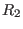
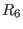
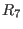
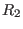
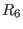
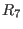

Next: Cryptography Up: Applications Previous: Graph Theory and Networks Contents Index
Analysis of electrical circuits is an extension of the ideas of networks of the previous section. We don't have to learn any new mathematics (Alas!), just the physical properties of electricity called Kirchhoff's Laws. These laws are usually stated as:
Flow is a measure of how many things pass or how much of a thing passes through a branch or junction during a given interval of time. The number of cars per hour which travel along a road or pass through an intersection is a flow. The liters of water which makes its way through a tap in a second is a flow. The amount of stocks traded in a day, oil pumped through a pipeline in an hour, water down a river in a year, the number of library books checked out in a month, ..., flow,flow,flow,flow. The flow of electricity through a wire is called the current. It is measured in units called amperes (or amp).
Flow can (and often does) change with time. Flow may vary in a cyclical way, as it does with electricity when we have alternating current. If the flow remains a constant (the rate never changes), we have direct current. The circuits we consider will be direct current networks.
Pressure is usually what causes flow. In plumbing, a water pump can be the source of the pressure. In electrical circuits, the source could be a battery. The battery gives a fixed pressure called the voltage. This is given in units called volts. Pressure in a direct current electrical circuit is applied in a direction. In electrical circuits we say that voltage is applied from the negative to the positive (from - to +). In other words, current will flow from the negative pole (cathode) of a battery to the positive pole (anode).4.1
Current can be inhibited completely if there are no wires connecting the cathode to the anode of a battery. A closed path is a path which connects a vertex back to itself. A closed path is also called a loop. If the path is open, no current can flow. Current can be partially inhibited by a resistance to its flow. A resistor is a piece of material which converts some of the electricity to heat. Resistance is given in units called ohms. The voltage measured on each side of a resistor obviously cannot be the same. Since the resistor consumes some of the current, we say there is a voltage drop across the resistor. Each resistor in a circuit produces a voltage drop equal to the product of its resistance and the current that flows through it. We write this algebraically as
where
Figure 4.7 shows a closed circuit containing one battery and three resistors. The battery is drawn as
and the resistors are each represented by the symbol
The current flow is labeled  and shown by an arc in the clockwise direction.
We now have enough information to use Kirchhoff's second law to find the current and the voltage drop
across each resistor.
and shown by an arc in the clockwise direction.
We now have enough information to use Kirchhoff's second law to find the current and the voltage drop
across each resistor.
We start by assigning variable names to each of the elements of the circuit.  would be the voltage
induced by the battery so that
would be the voltage
induced by the battery so that  volts. Each resistor will be called
volts. Each resistor will be called  with a subscript
indicating its rating in ohms, so that we have 
,
and 
.
with a subscript
indicating its rating in ohms, so that we have 
,
and 
.  will stand for the current
we will calculate, in amperes. From the second law we can write
will stand for the current
we will calculate, in amperes. From the second law we can write
Plugging in the numbers gives us
so
A more complicated system is given in Figure 4.8.
To evaluate this circuit, we start by applying Kirchhoff's first law to junction  to get
to get
or
Applying the first law to junction
or
For the right-hand loop we have
This gives us a system of linear equations
Using Gauss-Jordan we can then find that
![\includegraphics[width=6.0cm,height=2.6cm]{elec3.eps}](img931.gif)
![\includegraphics[width=6.0cm,height=2.6cm]{elec1.eps}](img916.gif)